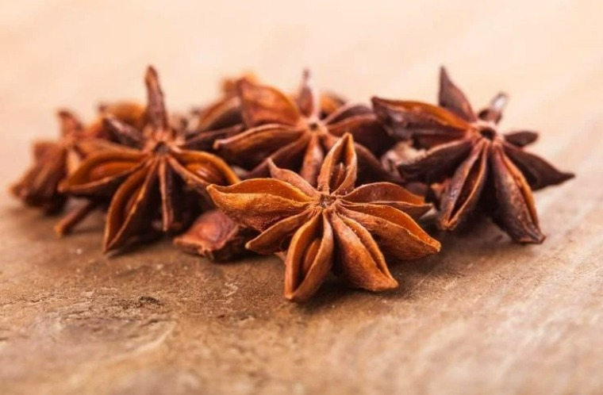
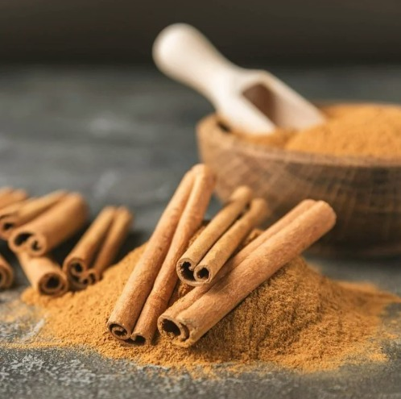
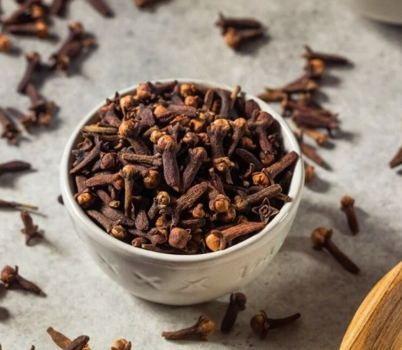
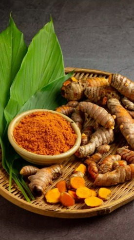
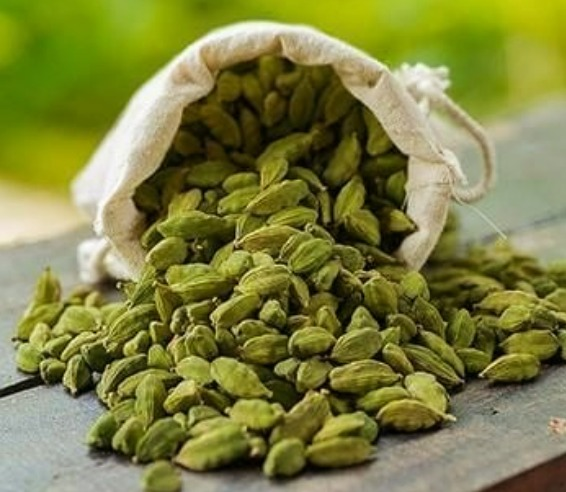
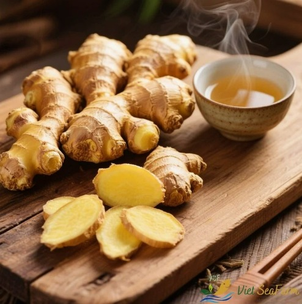
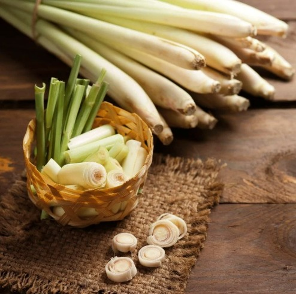
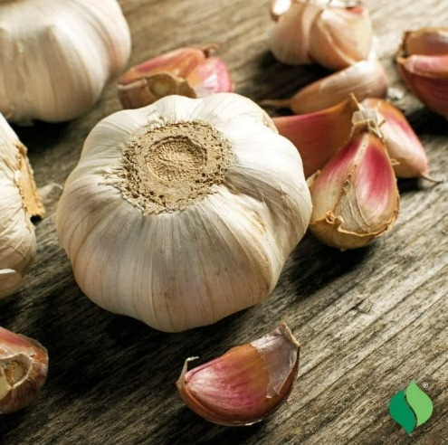
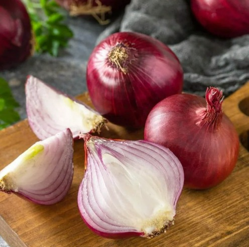
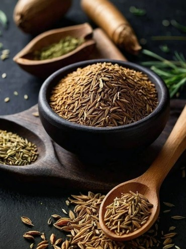

Characteristics of Malay Spices

Star Anise
- Star-shaped and hard
- Dark brown colour
- Sweet, licorice-like aroma

Cinnamon
- Brown rolled bark
- Hard texture
- Sweet and warm aroma

Clove
- Nail-shaped, dark brown
- Strong spicy aroma
- Aromatic and pungent

Turmeric
- Bright yellow root
- Earthy, slightly bitter taste
- Turns food yellow

Cardamom
- Small green pods
- Sweet floral aroma
- Soft and fragrant

Ginger
- Brown skin, yellow flesh
- Spicy and warm taste
- Fresh aroma

Lemongrass
- Long green stalks
- Strong citrus scent
- Hard outer layer

Garlic
- White clove bulbs
- Strong, pungent aroma
- Spicy and savoury

Shallot
- Red-purple skin
- Sweet, mild spicy taste
- Small bulb

Cumin
- Small brown seeds
- Earthy and nutty flavour
- Warm aroma